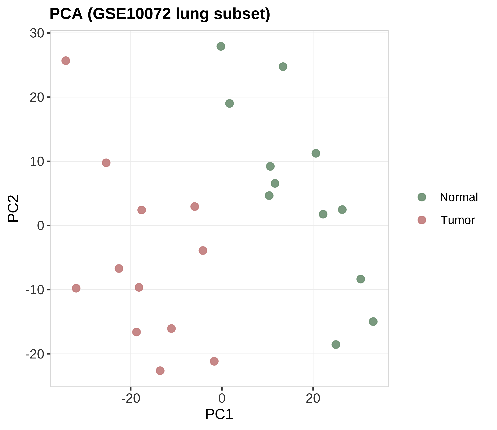
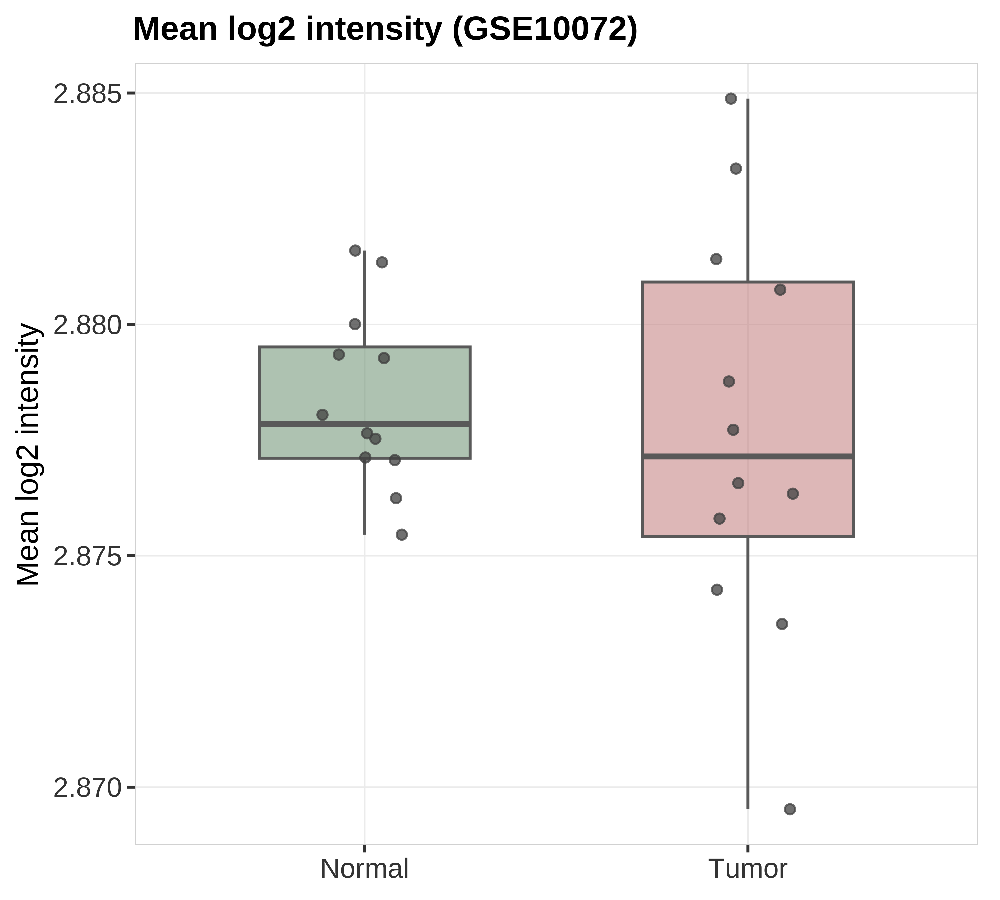

状态：PASS
已 source 本技能 脚本_scripts/: 工具_GEO系列矩阵解析_GeoSeriesMatrix.R, 运行GEO-TCGA骨架_runGeoTcgaSkeleton.R
data_provenance: REAL — GEO GSE10072 series matrix（本地缓存）。
详见 数据文件/DATA_SOURCE.md。
"skill","stage","n_rows","n_cols","n_samples","group_source","toy","data_provenance","accession","sourced_skill_scripts","notes","checked_at" "GEO-TCGA","post",2000,24,24,"GSE10072 series matrix; tissue Normal vs Tumor",FALSE,"REAL","GSE10072","已 source 本技能 脚本_scripts/: 工具_GEO系列矩阵解析_GeoSeriesMatrix.R, 运行GEO-TCGA骨架_runGeoTcgaSkeleton.R","REAL GEO metadata + QC plots; not toy survival","2026-07-19 13:18:50"


REAL GEO GSE10072: metadata table + PCA + tissue boxplot. accession=GSE10072.
生成时间：2026-07-19 13:18:50 · 报告规范：统一交付规范_DeliveryStandards · 版本 v1